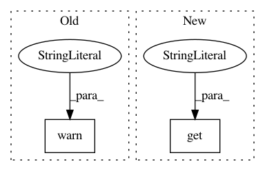

2a4e2b1b131d9a1b48d8eba5479b585bf328d3ba,onnx_tf/backend.py,TensorflowBackend,handle_elu,#Any#Any#Any#,745
Before Change
def handle_elu(cls, node, input_dict):
x = input_dict[node.inputs[0]]
if "alpha" in node.attrs.keys():
warnings.warn("Unsupported alpha attribute by Tensorflow in Elu."
"This attribute will be ignored.", UserWarning)
return [tf.nn.elu(x)]
@classmethod
def handle_flatten(cls, node, input_dict):
After Change
def handle_elu(cls, node, input_dict):
x = input_dict[node.inputs[0]]
alpha = node.attrs.get("alpha", 1.0)
if "alpha" in node.attrs.keys():
return [tf.cast(x < 0.0, tf.float32) * alpha * (tf.exp(x) - 1.0) + tf.cast(x >= 0.0, tf.float32) * x]
else:
return [tf.nn.elu(x)]
In pattern: SUPERPATTERN
Frequency: 4
Non-data size: 2
Instances
Project Name: onnx/onnx-tensorflow
Commit Name: 2a4e2b1b131d9a1b48d8eba5479b585bf328d3ba
Time: 2017-12-04
Author: tjingrant@gmail.com
File Name: onnx_tf/backend.py
Class Name: TensorflowBackend
Method Name: handle_elu
Project Name: onnx/onnx-tensorflow
Commit Name: a5990b39af4ede3122d2c5e34ecc6004e865d88e
Time: 2017-11-02
Author: tjingrant@gmail.com
File Name: onnx_tf/backend.py
Class Name: TensorflowBackend
Method Name: handle_batch_normalization
Project Name: NeuromorphicProcessorProject/snn_toolbox
Commit Name: bf20758f1001f7672aaa0e2de153b3349bc722fa
Time: 2019-06-13
Author: selin.fabel@uzh.ch
File Name: snntoolbox/simulation/target_simulators/brian2_target_sim.py
Class Name: SNN
Method Name: save
Project Name: NeuromorphicProcessorProject/snn_toolbox
Commit Name: 66268ffdc847e64216114871bd4169ad7872966a
Time: 2019-04-11
Author: bodo.rueckauer@intel.com
File Name: snntoolbox/simulation/target_simulators/pyNN_target_sim.py
Class Name: SNN
Method Name: load